library(ggplot2)
library(sf)
suppressMessages(library(tidyr))
stopifnot("run from end-epi/slater" = file.exists("helpers.R"))
if (!isTRUE(getOption("knitr.in.progress"))) params = rmarkdown::yaml_front_matter("3_figures.qmd")$params # running chunks interactively
source("helpers.R")
key = paste(params$areas, params$from, params$to, sep = "_")
d = readRDS(out(paste0("daily_", key, "_inputs.rds")))
fit = readRDS(out(paste0("daily_", key, "_", params$lag, ".rds")))
draws = rstan::extract(fit)
weekday = as.integer(format(d$dates, "%u"))
day_number = as.numeric(d$dates - DAY1) + 1
theme_set(theme_minimal(base_size = 12) + theme(panel.grid.minor = element_blank(), legend.position = "top"))
# their colours (Fig. 3): aggregate black, autoregressive blue, endemic ("exogenous") orange, mobility red, spatial green
COMPONENT_COLOURS = c(Aggregate = "black", Autoregressive = "blue", Endemic = "orange", Mobility = "red", Neighbourhood = "green")
# date axis limited to the modelled days, so no month tick past the last day; year under January and the first month
date_axis = scale_x_date(limits = range(d$dates), expand = c(0, 0), date_breaks = "1 month",
labels = \(x) ifelse(format(x, "%m") == "01" | seq_along(x) == which(!is.na(x))[1], format(x, "%b\n%Y"), format(x, "%b")))
bands = \(x) data.frame(t(apply(x, 2, quantile, c(0.025, 0.5, 0.975)))) |> setNames(c("lo", "mid", "hi"))Figures: daily replication of Slater et al. (2025)
The figures of Slater et al. (2025), in their design (mobilityCovid/castilla_final.R), for the daily fit of 1_barcelona.qmd (or 2_catalunya.qmd) with the same parameters. Render from end-epi/slater after that fit.
Cases and trips
Daily cases and trips between and within the ABS (their Fig. 1, without tests).
trips = od_sums(d$ids, data.frame(date = d$dates, period = seq_along(d$dates)))
data.frame(date = d$dates, Cases = colSums(d$cases), Trips = apply(trips, 3, sum) / 1e6) |>
pivot_longer(-date) |>
ggplot(aes(date, value)) +
geom_line() +
facet_wrap(~name, ncol = 1, scales = "free_y", strip.position = "left",
labeller = as_labeller(c(Cases = "Cases", Trips = "Trips (millions)"))) +
date_axis +
labs(x = NULL, y = NULL) +
theme(strip.placement = "outside")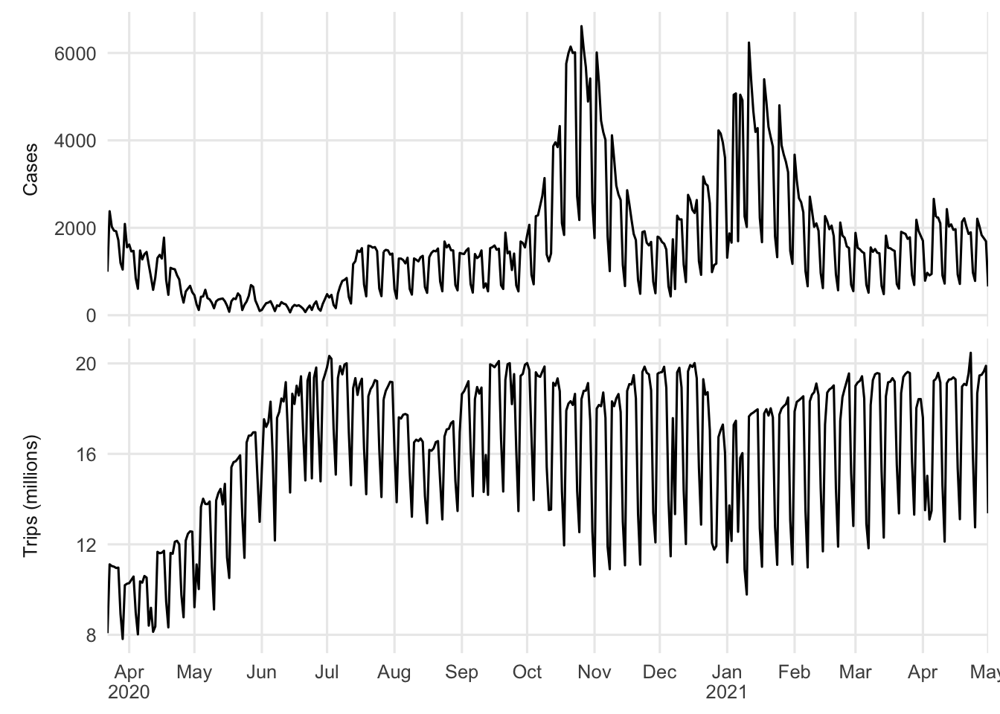
Mobility matrix
Mean daily trips from each ABS (rows) to each ABS (columns), ordered by total trips (their Fig. 2).
m = apply(trips, c(1, 2), mean)
o = order(rowSums(m), decreasing = TRUE)
data.frame(origin = rep(seq_along(o), length(o)), destination = rep(seq_along(o), each = length(o)), trips = c(m[o, o])) |>
ggplot(aes(destination, origin, fill = pmax(trips, 1))) +
geom_raster() +
scale_fill_gradient(low = "white", high = "black", trans = "log10", breaks = 10^(0:6),
labels = c("1", "10", "100", "1e3", "1e4", "1e5", "1e6")) +
scale_y_reverse(expand = c(0, 0)) + scale_x_continuous(expand = c(0, 0)) +
coord_equal() +
labs(x = "Destination", y = "Origin", fill = "Trips") +
theme(axis.text = element_blank(), legend.position = "right")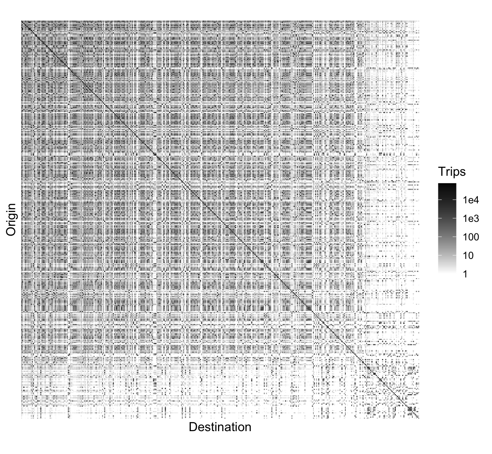
Crude R and lagged trips
Crude R_t, cases of the last 7 days over the 7 days before, against trips of the 7 days ending h days earlier (their cross-correlation, appendix A), and the scatter at the lag with the largest correlation.
total_cases = read_cases(d$ids)$cases |> colSums()
seven = \(x, t) vapply(t, \(u) sum(x[u - 0:6]), numeric(1))
days = day_number
crude_r = seven(total_cases, days) / seven(total_cases, days - 7)
window = trip_windows(d$ids, (min(days) - 21):max(days)) # lags 0 to 21 days
trips7 = \(lag) vapply(days - lag, \(u) sum(window(u, 6, 0)), numeric(1))
ccf = data.frame(lag = 0:21, correlation = vapply(0:21, \(h) cor(crude_r, trips7(h)), numeric(1)))
ggplot(ccf, aes(lag, correlation)) +
geom_point() +
labs(x = "Lag h (days)", y = "Cross correlation")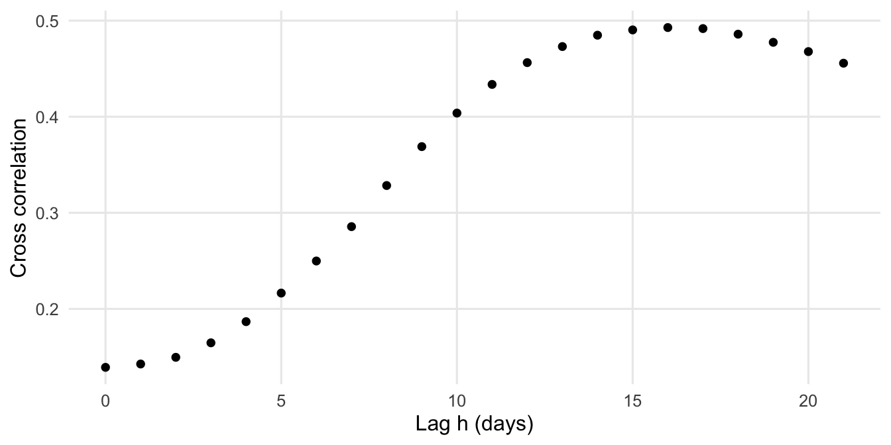
best = ccf$lag[which.max(ccf$correlation)]
data.frame(trips = trips7(best) / 1e6, crude_r) |>
ggplot(aes(trips, crude_r)) +
geom_point() +
geom_smooth(method = "lm", se = FALSE, colour = "darkcyan") +
labs(x = paste0("Trips of the 7 days ending ", best, " days earlier (millions)"), y = expression("Crude R"[t]))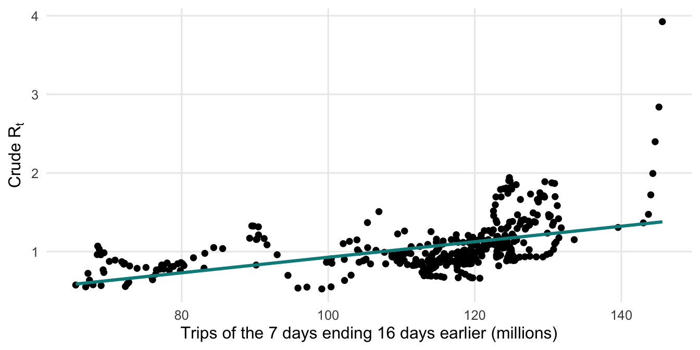
Components over time
Expected daily cases by component, summed over the ABS, posterior median and 95% credible interval, with the weekday factor applied so the components add up to the aggregate; observed cases as points (their Fig. 3a).
weekday_factor = draws$weekday_effect[, weekday] # draw x day
components = function(parts, observed) {
parts = lapply(parts, \(x) x * weekday_factor)
parts$Aggregate = Reduce(`+`, parts)
b = do.call(rbind, lapply(names(parts), \(k) cbind(bands(parts[[k]]), date = d$dates, component = k)))
ggplot(b, aes(date)) +
geom_ribbon(aes(ymin = lo, ymax = hi, fill = component, colour = component), alpha = 0.5) +
geom_point(data = data.frame(date = d$dates, cases = observed), aes(y = cases), size = 0.8) +
scale_fill_manual(values = COMPONENT_COLOURS) + scale_colour_manual(values = COMPONENT_COLOURS) +
guides(colour = "none") + date_axis +
labs(x = NULL, y = "Daily cases", fill = NULL)
}
components(list(Autoregressive = draws$autoregressive_day, Endemic = draws$endemic_day, Mobility = draws$mobility_day,
Neighbourhood = draws$neighbour_day), colSums(d$cases))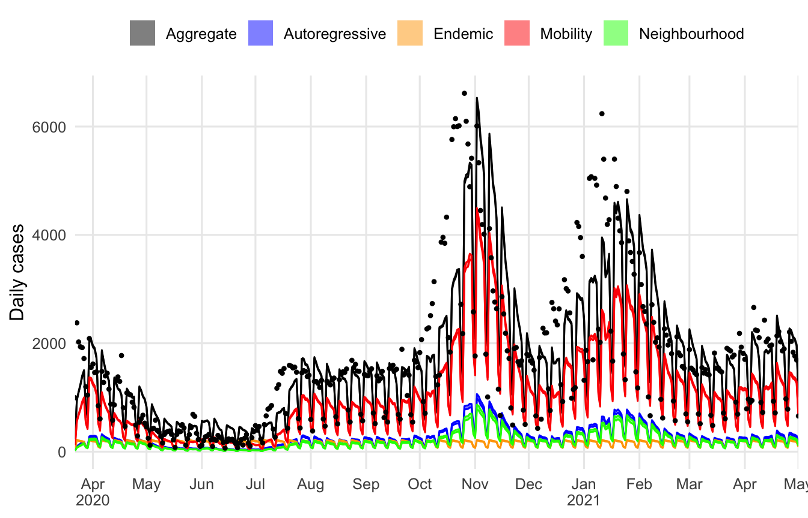
Two ABS
The ABS with the fewest trips per new infection (strong mobility component) and the one with the most (weak), as their Fig. 3c–f. Their components are recomputed from the draws for each ABS.
trips_area = apply(1 / draws$infections_per_trip_area, 2, median)
area_parts = function(i) {
lagged = \(x) draws$lag_weight %*% t(vapply(x, \(m) m[i, ], numeric(ncol(d$cases)))) # draw x day
list(Autoregressive = draws$autoregressive[, i] * lagged(d$lagged_cases),
Endemic = matrix(draws$endemic[, i] * d$pop[i], nrow(draws$endemic), ncol(d$cases)),
Mobility = draws$mobility[, 1, i] * lagged(d$mobility_pressure1) + draws$mobility[, 2, i] * lagged(d$mobility_pressure2),
Neighbourhood = d$pop[i] * draws$neighbour[, i] * lagged(d$neighbour_pressure))
}
abs_names = read.csv(spain("outputs/catalunya/tables/cat_abs_areas.csv"), colClasses = c(id = "character"))
for (i in c(which.min(trips_area), which.max(trips_area)))
print(components(area_parts(i), d$cases[i, ]) + ggtitle(abs_names$name[match(d$ids[i], abs_names$id)]))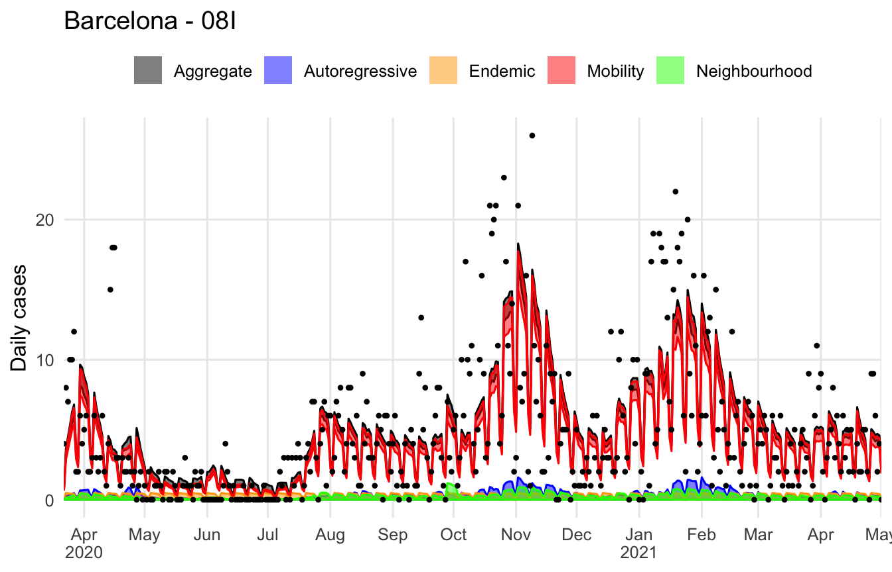
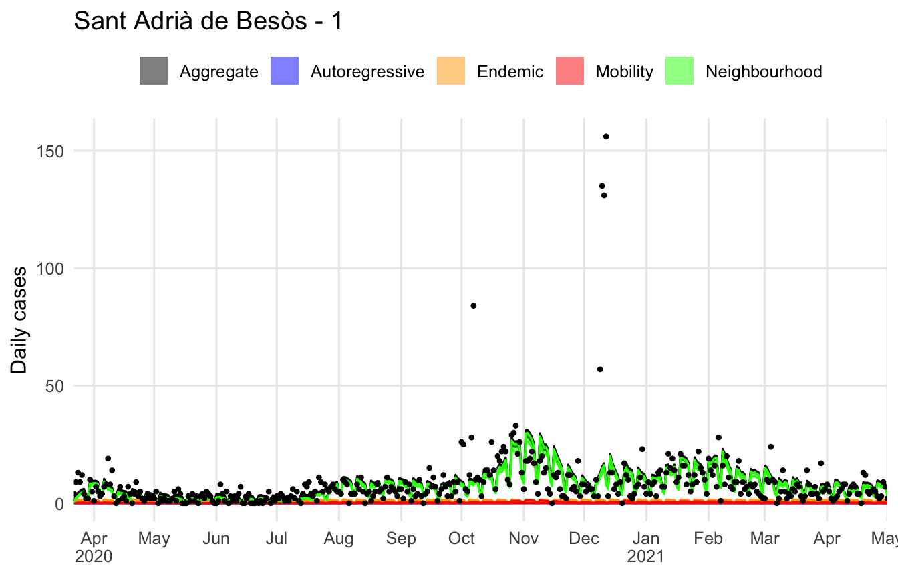
Components by ABS
Maps each component’s share of the expected cases in each ABS.
# expected cases by component, summed over the modelled days, for every draw (draw x ABS); weekday factor and lag
# weights per draw, so the four parts add up to the expected cases of each ABS
weekday_draw = draws$weekday_effect[, weekday] # draw x day
weighted = \(x) Reduce(`+`, lapply(seq_along(x), \(k) t(x[[k]] %*% t(weekday_draw)) * draws$lag_weight[, k]))
by_pop = \(coef) sweep(coef, 2, d$pop, `*`)
parts = list(Endemic = by_pop(draws$endemic) * rowSums(weekday_draw),
Autoregressive = draws$autoregressive * weighted(d$lagged_cases),
Neighbourhood = by_pop(draws$neighbour) * weighted(d$neighbour_pressure),
Mobility = draws$mobility[, 1, ] * weighted(d$mobility_pressure1) + draws$mobility[, 2, ] * weighted(d$mobility_pressure2))
total = Reduce(`+`, parts)
abs_geometry = st_read(spain("outputs/catalunya/geometry/cat_abs.gpkg"), quiet = TRUE) |>
dplyr::filter(id %in% d$ids) |> dplyr::arrange(id)
shares = do.call(rbind, lapply(names(parts), \(k) cbind(abs_geometry,
component = factor(k, names(parts)), share = apply(parts[[k]] / total, 2, median))))
ggplot(shares) +
geom_sf(aes(fill = share), colour = "grey40", linewidth = 0.05) +
scale_fill_viridis_b(breaks = seq(0, 1, 0.1), limits = c(0, 1), labels = scales::percent, direction = -1) +
facet_wrap(~component) +
coord_sf(datum = 4326) +
labs(title = paste0(tools::toTitleCase(params$areas), ": share of expected cases by component, ", params$from, " to ", params$to),
fill = "Share of\nexpected cases") +
theme(legend.position = "right", axis.text = element_text(size = 7))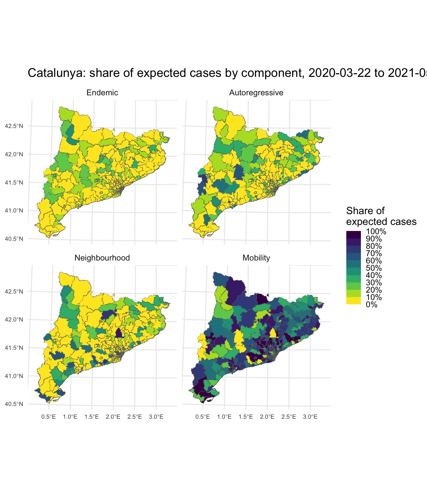
Trips per new infection
Infected trips associated with one new infection, by ABS: ranked with 95% credible intervals, and mapped with their breaks and greys (their Fig. 4b).
b = bands(1 / draws$infections_per_trip_area)
b[order(b$mid), ] |> transform(rank = seq_len(nrow(b))) |>
ggplot(aes(rank, mid)) +
geom_errorbar(aes(ymin = lo, ymax = hi), colour = "grey50") +
geom_point() +
scale_y_log10() +
labs(x = "ABS, ranked", y = "Trips per infection")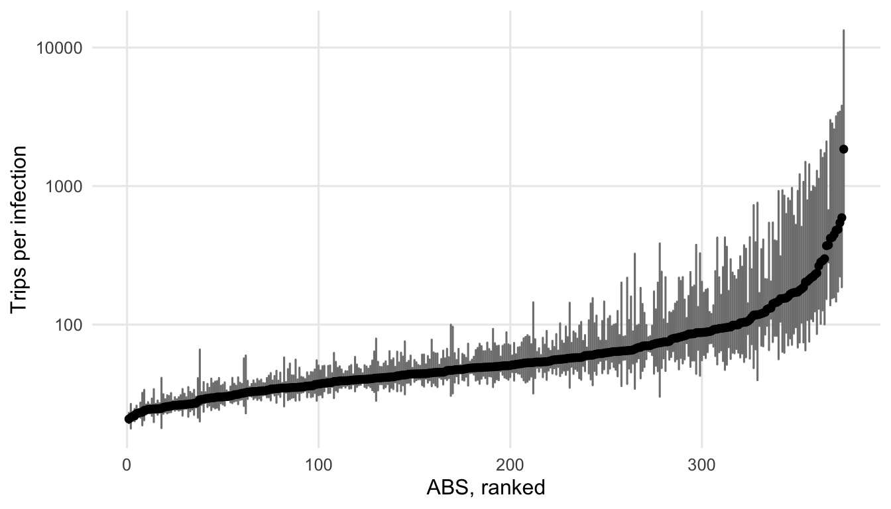
g = abs_geometry
g$trips = b$mid
breaks = c(1, 5, 10, 20, 50, 100, 200, 500, 1000, 2000)
ggplot(g) +
geom_sf(aes(fill = trips), colour = "grey40", linewidth = 0.1) +
scale_fill_stepsn(colours = gray(seq(0, 1, length.out = length(breaks) - 1)), breaks = breaks, limits = range(breaks),
trans = "log10", oob = scales::squish) +
coord_sf(datum = 4326) +
labs(fill = "Trips per\nnew infection") +
theme(legend.position = "right")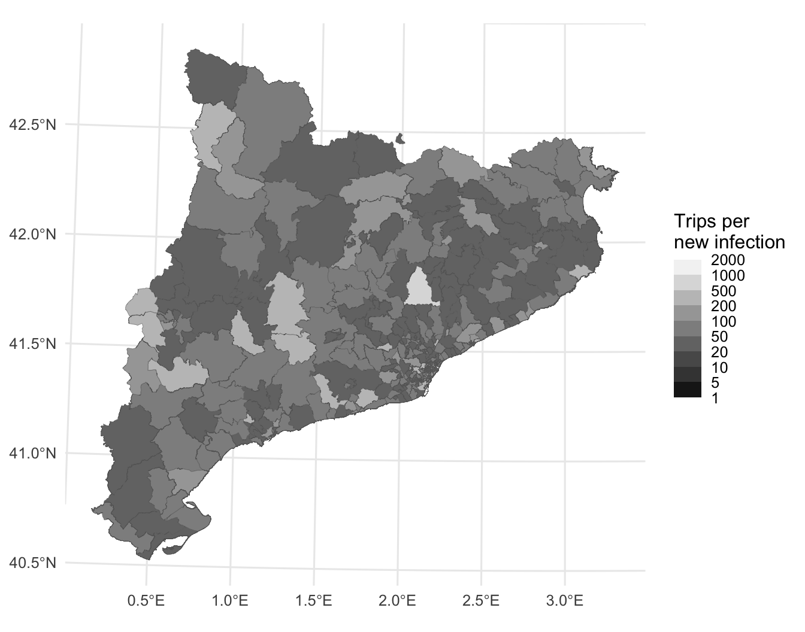
Over time, aggregated over the ABS (their Fig. 5).
cbind(bands(1 / draws$infections_per_trip_day), date = d$dates) |>
ggplot(aes(date)) +
geom_ribbon(aes(ymin = lo, ymax = hi), alpha = 0.4) +
geom_line(aes(y = mid)) +
date_axis +
labs(x = NULL, y = "Infected trips per new infection")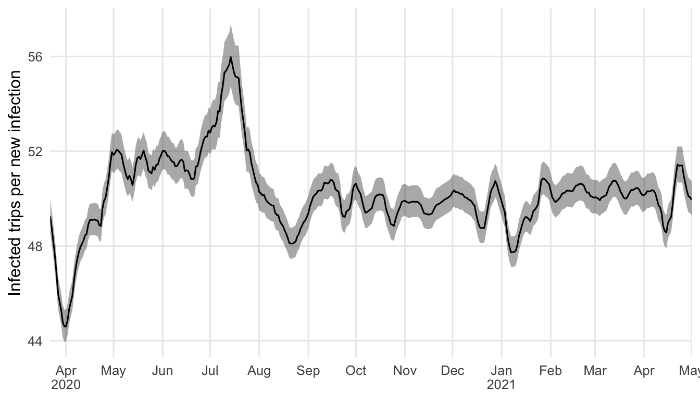
Effective reproduction number
Their code (castilla_final.R lines 760-782, their Fig. 6): for the first 50 draws, the dominant eigenvalue of Phi[orig, dest] = (mobility_1,dest w1[orig, dest] + mobility_2,dest w2[orig, dest] + pop_dest neighbour_dest v[orig, dest]) / pop_orig, plus autoregressive_dest on the diagonal, once a week, times the draw’s mean weekday factor (ours: the factor multiplies every day’s expected cases and has geometric mean 1, so its arithmetic mean scales a day’s infections over the week; their weekly model has none). The pop_dest factor is ours too: their model 1 has it in the expected count but not in this code. Their trips of weeks t - 1 and t - 2 are here the trips of the 7 days up to the day and the 7 days before; their double loop over origins and destinations is written as matrix products.
at = seq(1, length(d$dates), by = 7)
window = trip_windows(d$ids, day_number[at])
spatial_weights = neighbour_weights(d$ids)
mobility = draws$mobility[1:50, , ]
neighbour = draws$neighbour[1:50, ]
autoregressive = draws$autoregressive[1:50, ]
basic_R = matrix(nrow = 50, ncol = length(at))
for (sample in 1:50) {
for (t in seq_along(at)) {
w1 = window(day_number[at[t]], 6, 0)
w2 = window(day_number[at[t]], 13, 7)
Phi = (w1 %*% diag(mobility[sample, 1, ]) + w2 %*% diag(mobility[sample, 2, ]) +
spatial_weights %*% diag(d$pop * neighbour[sample, ])) / d$pop + diag(autoregressive[sample, ])
basic_R[sample, t] = max(Mod(eigen(Phi)$values)) * mean(draws$weekday_effect[sample, ])
}
}
cbind(bands(basic_R), date = d$dates[at]) |>
ggplot(aes(date)) +
geom_ribbon(aes(ymin = lo, ymax = hi), alpha = 0.3) +
geom_line(aes(y = mid)) +
geom_hline(aes(yintercept = 1), lty = 2, col = "red") +
date_axis +
labs(x = NULL, y = expression(R[eff]))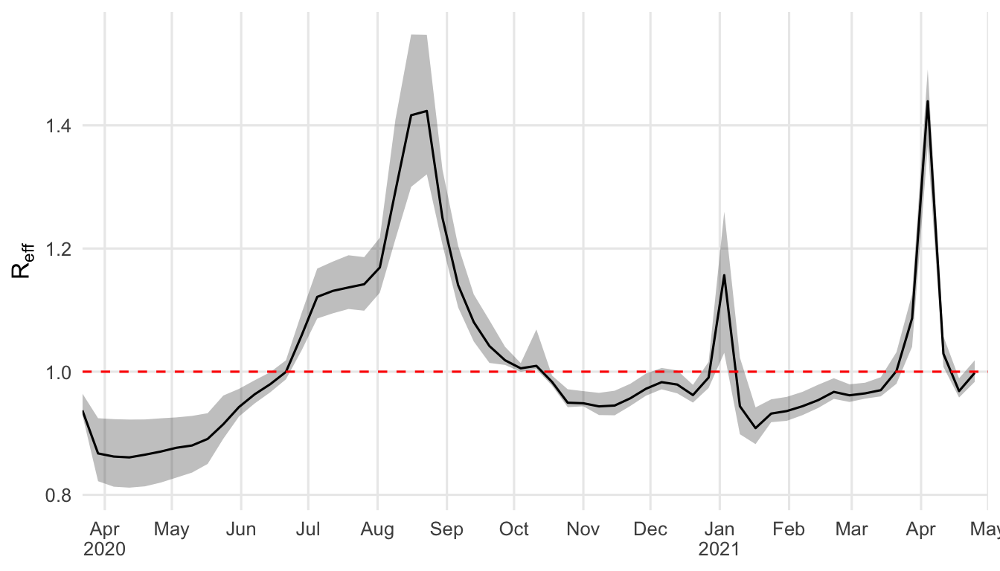
Trace plots
Arbitrarily chosen parameters, as their supplementary trace plots.
i = round(seq(1, length(d$ids), length.out = 3))
rstan::traceplot(fit, pars = c(paste0("mobility[1,", i, "]"), paste0("neighbour[", i, "]"), paste0("autoregressive[", i, "]"),
paste0("endemic[", i, "]")), nrow = 4) + theme(legend.position = "none")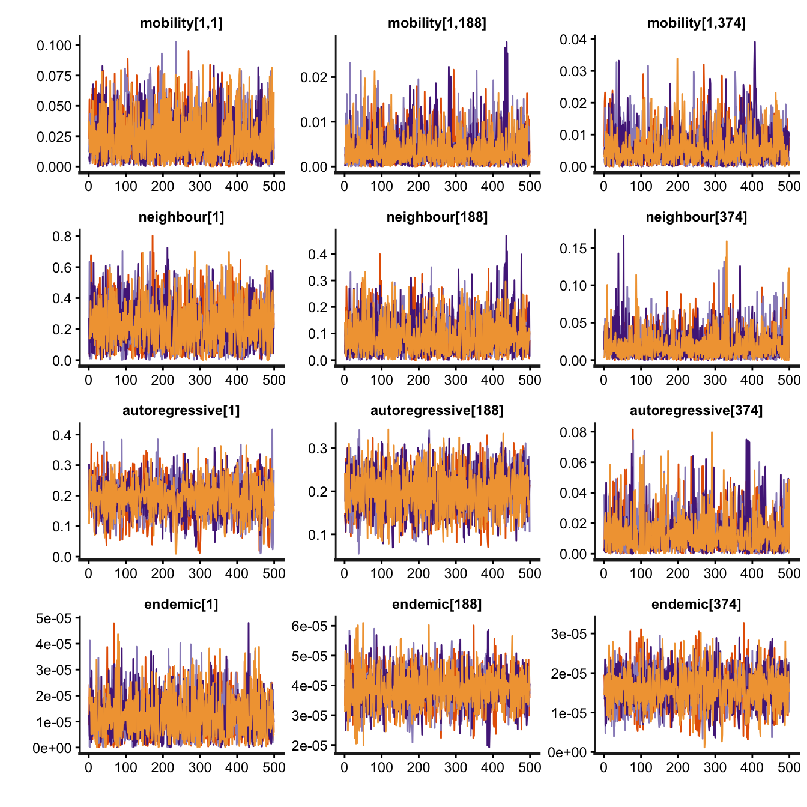